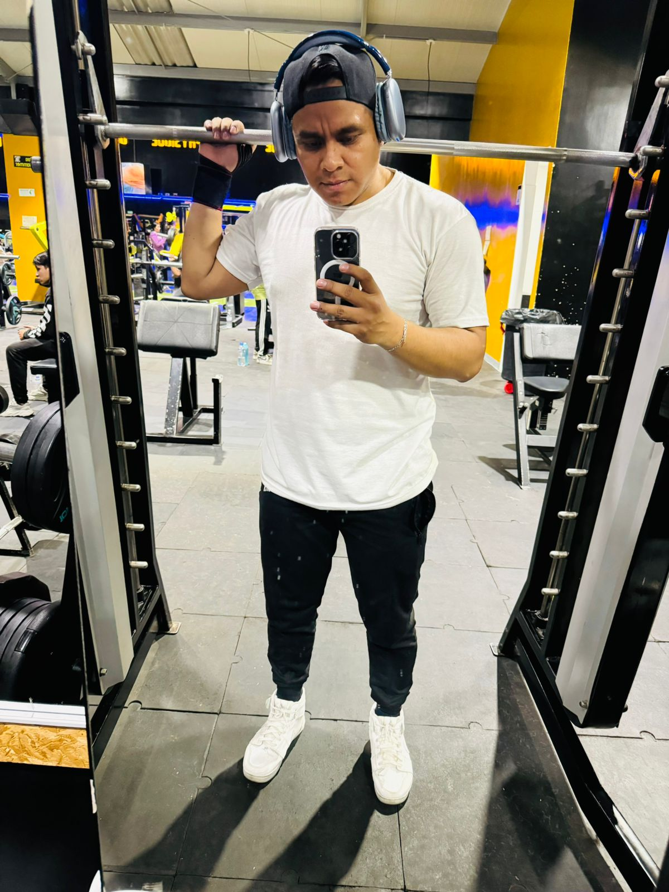
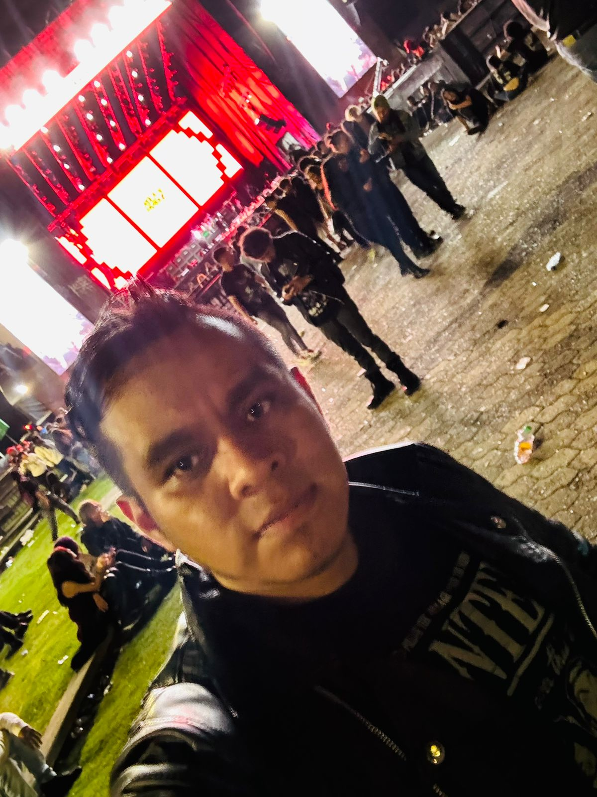

Mi nombre es Henry Eduardo Curico Saldaña, tengo 35 años, vivo en la ciudad de Bogota, estoy cursando el
ultimo semestre de ingenieria de sistemas. Tengo un hijo de 7 años, actualmente soy soltero.
He vivido en diferentes partes de Bogota, mi primer recuerdo empeiza en Santa librada, al sur de Bogota, el
segundo
lugar es en Fontibon y el ultimo es en Maria Paz, lugar donde vivi mas años de mi infancia, claro, todo esto
es recuerdo cuando
vivia con mi familia. Sobre mi familia, somos 7 en total, madre, padre y 4 hermanos, 2 mujeres y 3 hombres,
yo soy el del medio.
Constantemente estoy en aprendizaje, soy amante a la programaciòn, asi que le dedico bastante tiempo posible
para aprender màs, mis fuertes son programaciòn web: como HTML, CSS, JAVASCRIPT, SQL. Cada dìa es un reto
para mi
ya que aprender otros lenguajes no es facil, llegar hasta la complejidad de programar lo hace mas
interesante.
Al finalizar el bachillerato, fui a prestar el servicio militar en la policia, fue una experiencia muy
buena, tano asi que
intente seguir la carrera, pero, por cosas de la vida no pude ingresar. espues de eso viene algo que nunca
pense estudiar
y fue programaciòn de software, aqui empece a quere mas esta carrera de la ingenieria, y ya fue muy despues
que decidi
ingresar a la universidad. Primero trabaje como analista de sooporte informatico, aprendi muchas cosas de
otras personas
y mi perfil laboral fue mas llamativo. Durante mi trabajo, decidi estudiar y yo mismo gastar el estudio.
Aqui sigo en el ultimo semestre, aprendiendo mas sobre muchas personas, y mi gran deseo personal es ser un
programador experto
como senior, full-stack, y voy en ese camino, con todad a seguir luchando por mi hijo y mi mamà.

Mi llegada al gimnasio no fue por que quise, una razon es mi mamà linda, ella se fue y dejo un vacio enorme, trato que cada dia sea tranquilo para mi, pero aveces, los pensamientos, la tristeza te gana màs, para sigo en pie por ella. Llevo 2 años y medio yendo al gimnasio, voy constantemente, este tiempo me ha dado una pasiòn fuerte por entrenar cada dia, durante ese tiempo he conocido grandes personas, tanto asi que hemos logrado una amistad muy grande, por la cual entreno diariamente con ellos. Nuestros entrenamiento es muy divertido, hablamos de muchos cosas, nos reimos y hasta por un momento se nos olvida de los problemas. Esto te ayuda no solamente fisicamente, sino a fortalecer tu mente y sobre todo a conocer personas maravillosas.
MI historia de la musica es bastante ironico, cuando escuche por primera vez rock, dije "esa musica es diabolica", fue cuando tuve 13 años pero, de tanto escuchar lo mismo, se me quedo grabado en mi cabeza y me quedo gustanto. Recuerdo que primero escuche a Linkin Park luego los Red Hot Chilli Peppers y mi primera banda pesada fue Slipknot, ahi quede enamorado de esa musica, los escuchaba diariamente, luego conoci a Rammstein, Guns N`roses, audioSlave, System of a down, Metallica, simple plan, Blink 182, angeles del infierno, Nirvana, entre otras. Mis gustos fueron aumentando mas cuando conocia mas personas con diferentes gustos, mi emocion por ir a los conciertos se fue poniendo mas intenso, y la primera vez que fui fue a Rock al parque, ese primer dia lo disfrute mucho, y conoci bandas mas pesadas que me fue gustanto mucho. Una vez tienes un gusto por esta musica, te imaginas tocando uns instrumento, y conmigo no fue la excepcion anhelaba tener una bateria, fue mi primer gusto instrumental, pero, ese no fue mi primer instrumento, fue la guitarra. Lo recuerdo muy bien, mi primera guitarra fue una electrica que me lo habian regalado. Mi priemra cancion fue de Nirvana - The man who sold the world me acuero porque esa musica me gustaba y aun me gusta, y yo dije "cuando tenga mi priemra guitara esa va a ser la primera cancion que toque". Una vez haber tenido mi guitara y haber aprendido otras super canciones, por fin pude comprarme la bateria, mi emocion fue grande un sueño cumplido, despues ya se imaginaran lo que paso despues. Y bueno, finalmente he conocido otras bandas y he ido a diferentes conciertos de mis gustos.